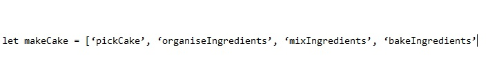
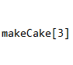
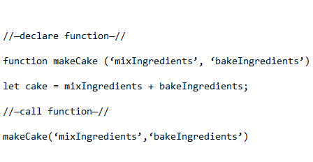
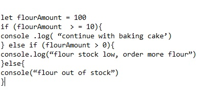
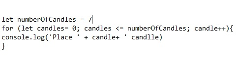

Javascript is a coding language that allows programmers to drastically change the content of a web page, such as controlling media elements. It works with CSS and HTML to improve on their base functionality, implementing things that these two tools cannot achieve alone. Think of it like baking a birthday cake with the finished cake being your web page. You need ingredients for the actual cake (HTML), then you are going to want icing to finish the cake and make it look good (CSS) but what is cake without candles, sparklers and glitter? That’s where Javavscript comes in.
When thinking how the different elements come together to make a birthday cake it is always good practice to have your method organised, the same goes for all the elements that go into making a web page. This is where arrays come into play, they can be used to access objects as you need them, like would when making a birthday and the objects are your ingredients. Arrays will look something like this:
When you want to access or retrieve specific information within an array you need to access its index, these are always organised in numerical order from left to right within the array. Objects within an array always start counting their position within the array from ‘0’. In the example above the object ‘pickCake’ is in position ‘0’ and the last object ‘bakeIngredients’ is in position ‘3’. Therefore to access the objects within the array you need to reference there position within the array, like so:
This would access the object ‘bakeIngredients’.
Functions are a set grouping of statements that perform certain tasks. This in many cases takes an input and returns an output. Returning to the cake analogy. We can use the mixing the ingredients and baking of the cake itself as parameters
You are not limited to set parameters with the function you can add or omit information to get your desired result.
When we start making the birthday cake, executing the method in the correct order is imperative. You can't bake it without mixing the ingredients first. Same goes for a web page. That is why we need to control flow, to have the code be executed in the correct order. There are many ways to do this here are a few.
Conditionals such as ‘if’ and ‘else statements allow you to confirm whether or not a particular condition has been met. Here is an example that will check for if we have enough flour to bake our cake.
Loops keep going until a condition becomes false, or they can just keep on going. For example a loop could be used to work out the amount of candles we need for our birthday cake. Like so:
So now to the DOM or (document object model). The DOM is an API that connects all the elements of a web page together, the HTML, CSS and Javascript. This does this by showing the document as a collection of nodes and objects, this allows all the programming languages to access and interrelate with the page. In addition it can be modified and edited just like the CSS and HTML using for example Javascript language. Think of “The DOM” being displayed like a tree that gives you access to all the elements of your page. Using the aforementioned Javascript language within “The DOM” allows you to modify any and all elements within your document. Super neet. See diagram below for a visual representation of the “The DOM” tree.